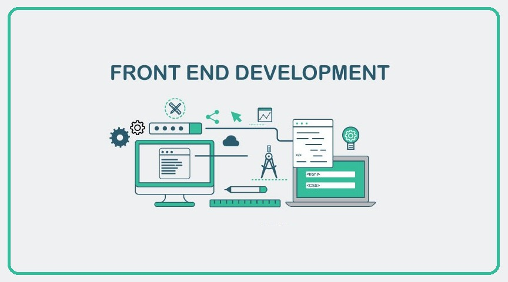
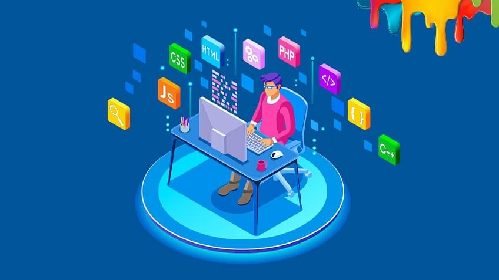

SipnaCOET
- Home
- About
- Project
Hello!
A website, every final year engineering student will get helped with ! Doing work is not just play with words but building actual application is the real hardwork and thus, we plan, design, code. So, our given project is to solve difficulties of final year engineering students to make project on a topic which has been considered before. So, here are we to solve your problem and even beyond that, we are here to help you !

WEB DEVELOPER
Web development is the work involved in developing a website for the Internet (World Wide Web) or an intranet (a private network). Web development can range from developing a simple single static page of plain text to complex web applications, electronic businesses, and social network services. A more comprehensive list of tasks to which Web development commonly refers, may include Web engineering, Web design, Web content development, client liaison, client-side/server-side scripting, Web server and network security configuration, and e-commerce development. For larger organizations and businesses, Web development teams can consist of hundreds of people (Web developers) and follow standard methods like Agile methodologies while developing Web sites. Smaller organizations may only require a single permanent or contracting developer, or secondary assignment to related job positions such as a graphic designer or information systems technician. Web development may be a collaborative effort between departments rather than the domain of a designated department. There are three kinds of Web developer specialization: front-end developer, back-end developer, and full-stack developer. Front-end developers are responsible for behavior and visuals that run in the user browser, while back-end developers deal with the servers.

APP DEVELOPER
Mobile app development is the act or process by which a mobile app is developed for mobile devices, such as personal digital assistants, enterprise digital assistants or mobile phones. These software applications are designed to run on mobile devices, such as a smartphone or tablet computer. These applications can be pre-installed on phones during manufacturing platforms, or delivered as web applications using server-side or client-side processing (e.g., JavaScript) to provide an "application-like" experience within a web browser. Application software developers also must consider a long array of screen sizes, hardware specifications, and configurations because of intense competition in mobile software and changes within each of the platforms. Mobile app development has been steadily growing, in revenues and jobs created.
FRONT END DEVELOPER
Front-end web development, also known as client-side development is the practice of producing HTML, CSS and JavaScript for a website or Web Application so that a user can see and interact with them directly. The challenge associated with front end development is that the tools and techniques used to create the front end of a website change constantly and so the developer needs to constantly be aware of how the field is developing. The objective of designing a site is to ensure that when the users open up the site they see the information in a format that is easy to read and relevant. This is further complicated by the fact that users now use a large variety of devices with varying screen sizes and resolutions thus forcing the designer to take into consideration these aspects when designing the site. They need to ensure that their site comes up correctly in different browsers (cross-browser), different operating systems (cross-platform) and different devices (cross-device), which requires careful planning on the side of the developer.
BACK END DEVELOPER
Back-end Development refers to the server-side development. It focuses on databases, scripting, website architecture. It contains behind-the-scene activities that occur when performing any action on a website. It can be an account login or making a purchase from an online store. Code written by back-end developers helps browsers to communicate with database information. Most common example of Backend programming is when you are reading an article on the blog. The fonts, colors, designs, etc. constitute the frontend of this page. While the content of the article is rendered from a server and fetched from a database. This is the backend part of the application.
CYBER SECURITY
Computer security, cybersecurity, or information technology security (IT security) is the protection of computer systems and networks from information disclosure, theft of or damage to their hardware, software, or electronic data, as well as from the disruption or misdirection of the services they provide. The field is becoming increasingly significant due to the continuously expanding reliance on computer systems, the Internet and wireless network standards such as Bluetooth and Wi-Fi, and due to the growth of "smart" devices, including smartphones, televisions, and the various devices that constitute the "Internet of things". Cybersecurity is also one of the significant challenges in the contemporary world, due to its complexity, both in terms of political usage and technology.